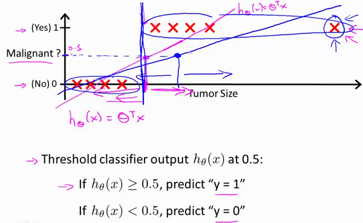
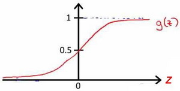
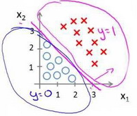
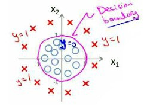
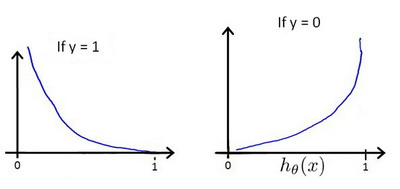
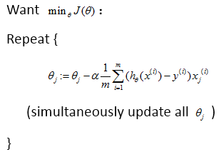
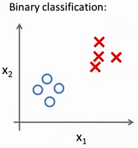
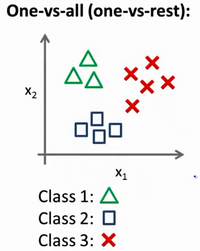
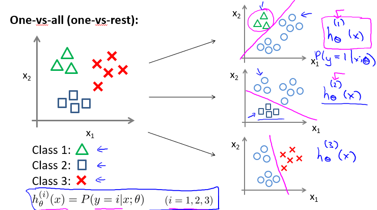

为什么不使用线性回归
从二元的分类问题开始讨论。
我们将因变量(dependent variable)可能属于的两个类分别称为负向类（negative class）和正向类（positive class），则因变量$y\in { 0,1 \\}$ ，其中 0 表示负向类，1 表示正向类。


如果我们要用线性回归算法来解决一个分类问题，对于分类， $y$ 取值为 0 或者1，但如果你使用的是线性回归，那么假设函数的输出值可能远大于 1，或者远小于0，即使所有训练样本的标签 $y$ 都等于 0 或 1。尽管我们知道标签应该取值0 或者1，但是如果算法得到的值远大于1或者远小于0的话，就会感觉很奇怪。所以我们在接下来的要研究的算法就叫做逻辑回归算法，这个算法的性质是：它的输出值永远在0到 1 之间。
Logistic 回归
逻辑回归算法是分类算法，我们将它作为分类算法使用。有时候可能因为这个算法的名字中出现了“回归”使你感到困惑，但逻辑回归算法实际上是一种分类算法，它适用于标签 $y$ 取值离散的情况，如：1 0 0 1。
模型
逻辑回归模型的假设是： $h_\theta \left( x \right)=g\left(\theta^{T}X \right)$
其中：
$X$ 代表特征向量
$g$ 代表逻辑函数（logistic function)是一个常用的逻辑函数为S形函数（Sigmoid function），公式为： $g\left( z \right)=\frac{1}{1+e^{-z} }$。

$h_\theta \left( x \right)$的作用是，对于给定的输入变量，根据选择的参数计算输出变量=1的可能性（estimated probablity）即$h_\theta \left( x \right)=P\left( y=1|x;\theta \right)$
例如，如果对于给定的$x$，通过已经确定的参数计算得出$h_\theta \left( x \right)=0.7$，则表示有70%的几率$y$为正向类，相应地$y$为负向类的几率为1-0.7=0.3。
决策界限
在逻辑回归中，我们预测：
当${h_\theta}\left( x \right)>=0.5$时，预测 $y=1$。
当${h_\theta}\left( x \right)<0.5$时，预测 $y=0$ 。
根据上面绘制出的 S 形函数图像，我们知道当
又 $z={\theta^T}x$ ，即：
假设我们有一个模型：

参数$\theta$ 是向量[-3 1 1]。 则当$-3+{x_1}+{x_2} \geq 0$，即${x_1}+{x_2} \geq 3$时，模型将预测 $y=1$。
我们可以绘制直线${x_1}+{x_2} = 3$，这条线便是我们模型的分界线，将预测为1的区域和预测为 0的区域分隔开。

$z={\theta^T}x$ 也可以使用复杂的模型来适应非常复杂形状的判定边界。

需要用曲线才能分隔 $y=0$ 的区域和 $y=1$ 的区域，我们需要二次方特征：${h_\theta}\left( x \right)=g\left( {\theta_0}+{\theta_1}{x_1}+{\theta_2}{x_2}+{\theta_3}x_{1}^{2}+{\theta_4}x_{2}^{2} \right)$是[-1 0 0 1 1]，则我们得到的判定边界恰好是圆点在原点且半径为1的圆形。
代价函数
对于线性回归模型，我们定义的代价函数是所有模型误差的平方和。理论上来说，我们也可以对逻辑回归模型沿用这个定义，但是问题在于，当我们将${h_\theta}\left( x \right)=\frac{1}{1+e^{-\theta^TX} }$带入到这样定义了的代价函数中时，我们得到的代价函数将是一个非凸函数（non-convexfunction）。

线性回归的代价函数为：$J(\theta_0,\theta_1…\theta_n)=\frac{1}{2m}\sum\limits_{i=1}^{m}(h_{\theta}(x^{(i)})-y^{(i)})^2$
我们重新定义逻辑回归的代价函数为：$J\left( \theta \right)=\frac{1}{m}\sum\limits_{i=1}^{m}{Cost\left( {h_\theta}\left( {x}^{\left( i \right)} \right),{y}^{\left( i \right)} \right)}$
${h_\theta}\left( x \right)$与 $Cost\left( {h_\theta}\left( x \right),y \right)$之间的关系如下图所示：

这样构建的$Cost\left( {h_\theta}\left( x \right),y \right)$函数的特点是：当实际的 $y=1$ 且${h_\theta}\left( x \right)$也为 1 时误差为 0，当 $y=1$ 但${h_\theta}\left( x \right)$不为1时误差随着${h_\theta}\left( x \right)$变小而变大；当实际的 $y=0$ 且${h_\theta}\left( x \right)$也为 0 时代价为 0，当$y=0$ 但${h_\theta}\left( x \right)$不为 0时误差随着 ${h_\theta}\left( x \right)$的变大而变大。
梯度下降
上述的分段逻辑回归代价函数可以合并成：
可以看出当y=0时，Cost为$-log(1-h_{\theta}(x))$ ，当y=1时，Cost为$ -log(h_{\theta}(x))$。
综上，代价函数为：
该代价函数也为凸函数，可以通过梯度下降寻找最小的一组$\theta$ 使得$J(\theta)$最小。

多类别分类
如何使用逻辑回归 (logistic regression)来解决多类别分类问题，具体来说，通过一个叫做”一对多” (one-vs-all) 的分类算法。
对于二元分类问题，数据集长这个样子：

对于一个多类分类问题，我们的数据集或许看起来像这样：

上图表示的有3个类别，我们用三角形表示 $y=1$，方框表示$y=2$，叉叉表示 $y=3$。我们下面要做的就是使用一个训练集，将其分成3个二元分类问题。

我们先从用三角形代表的类别1开始，实际上我们可以创建一个，新的”伪”训练集，类型2和类型3定为负类，类型1设定为正类，我们创建一个新的训练集，拟合出分类函数$h_\theta^{(1)}$。对于类别2和类别3都用这个方法，拟合出分类函数$h_\theta^{(2)}，h_\theta^{(3)}$。
我们得到一系列的模型简记为： $h_\theta^{\left( i \right)}\left( x \right)=p\left( y=i|x;\theta \right)$其中：$i=\left( 1,2,3….k \right)$
最后，在我们需要做预测时，我们将所有的分类机都运行一遍，然后对每一个输入变量，都选择最高可能性的输出变量。现在要做的就是训练这个逻辑回归分类器：$h_\theta^{\left( i \right)}\left( x \right)$， 其中 $i$ 对应每一个可能的 $y=i$，最后，为了做出预测，我们给出输入一个新的 $x$ 值，用这个做预测。我们要做的就是在我们三个分类器里面输入 $x$，然后我们选择一个让 $h_\theta^{\left( i \right)}\left( x \right)$ 最大的$ i$，即$\mathop{\max}\limits_i\,h_\theta^{\left( i \right)}\left( x \right)$ （因为$h_\theta^{\left( i \right)}\left( x \right)$计算结果是$y=i$的概率，当然要选择概率最大的结果）。